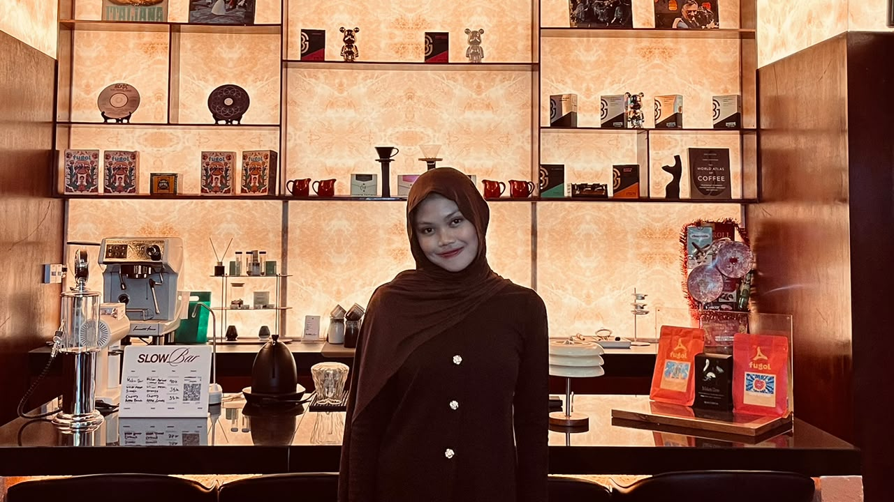

HALO, SAYA
Ganis
Khumairah
Seorang
Mahasiswa sistem informasi yang memiliki prinsip untuk selalu berani mencoba karena kesempatan hanya milik orang yang berani.

Tentang Saya
Saya Ganis Khumairah, mahasiswa Program Studi Sistem Informasi, FMIPA, Universitas Tanjungpura, Pontianak (angkatan 2026). Saya tertarik pada cara teknologi membuat pekerjaan sehari-hari jadi lebih rapi dan mudah. Dan saat ini saya sedang belajar dasar website dan python supaya lebih memahami teknologi dibidang saya.
Diluar kelas, kegiatan yang saya senangi adalah berolahraga seperti lari dan bermain volly. Dan dari olahraga inilah saya belajar disiplin, kerja sama tim, dan pantang menyerah
- Pendidikan
- S1 Sistem Informasi, Untan
- Minat
- Desain sederhana dan saya juga tertarik dengan UI/UX
- Hobi
- Lari, Badminton, Volly
Yang sedang saya pelajari
- Saat ini saya sedang belajar tentang pembuatan web sederhana, pembuatan web profile ini
Pengalaman & Riwayat
Mahasiswa Sistem Informasi
Universitas Tanjungpura, Pontianak. Belajar pemrograman, basis data, dan analisis sistem lewat praktikum dan tugas kuliah.
Organisasi
Osis dan saya menjabat dibidang humas, dari sini saya belajar mengembangkan public speaking saya agar tidak grogi lagi berbicara di depan banyak orang banyak, dan saya belajar manajemen waktu, dan juga belajar kerja sama dalam tim
Prestasi
Juara lomba lomba volly saat classmeeting, Juara lomba sprint kategori mahasiswa 100 meter
SMAN 6 PONTIANAK
Jurusan MIPA